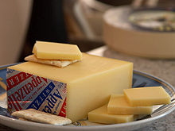

Alpine Washed Rind Cheese Recipe

The Knight of Hard Cheeses
Appenzeller cheese, an Alpine washed rind cheese, is a hard cow's-milk cheese produced in the Appenzellerland region of northeast Switzerland, in the two modern-day cantons of Appenzell Innerrhoden and Appenzell Ausserrhoden. It is classified as a Swiss-type or Alpine cheese.(Source: Wikipedia)
Ingredients
- 4 Gallons of Milk (Not UltraPasteurized) Minus 8 oz
- 1/4 tsp MA 4002 Culture (use 1/8 tsp for raw milk)
- 1/64 tsp Bacteria Linens
- 1/64 tsp Geotrichum Candidum
- 3ml of Single Strength Liquid Rennet
- Cheese Salt
- 1/2 tsp Calcium Chloride (for pasteurized milk)
Steps:
- Heat & Acidify the Milk
- Coagulate the Milk with Rennet
- Cut the Curd
- Cook the Curd
- Transfer the Curd to Molds
- Drain the Curds in the Molds
- Remove the Cheese from the Mold
- Salt the Cheese
- Let the Bloomy Rind Develop
- Age the Cheese